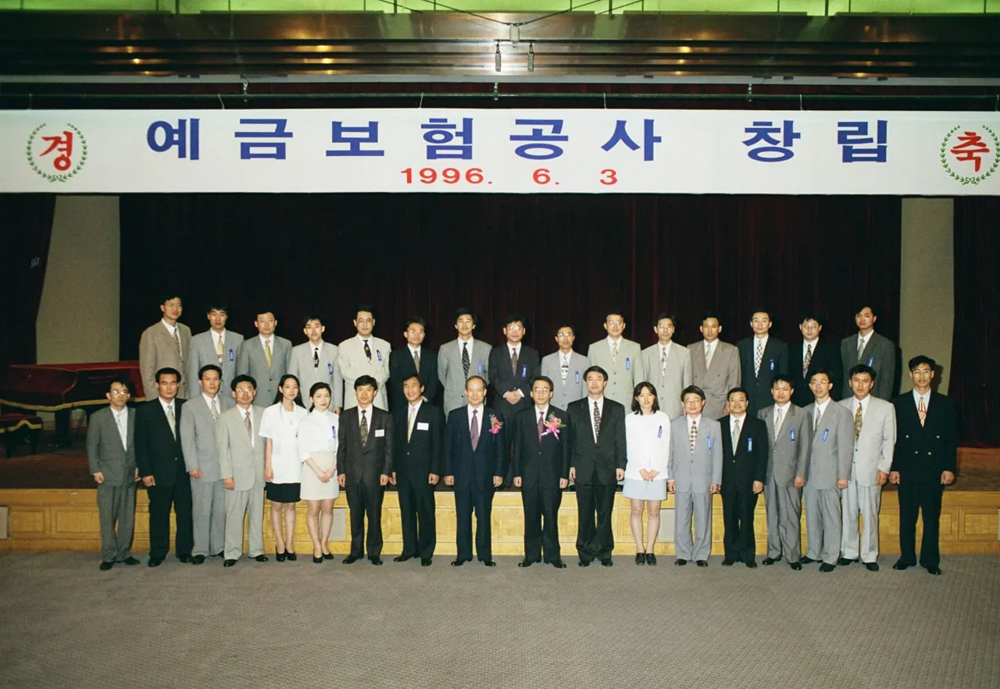
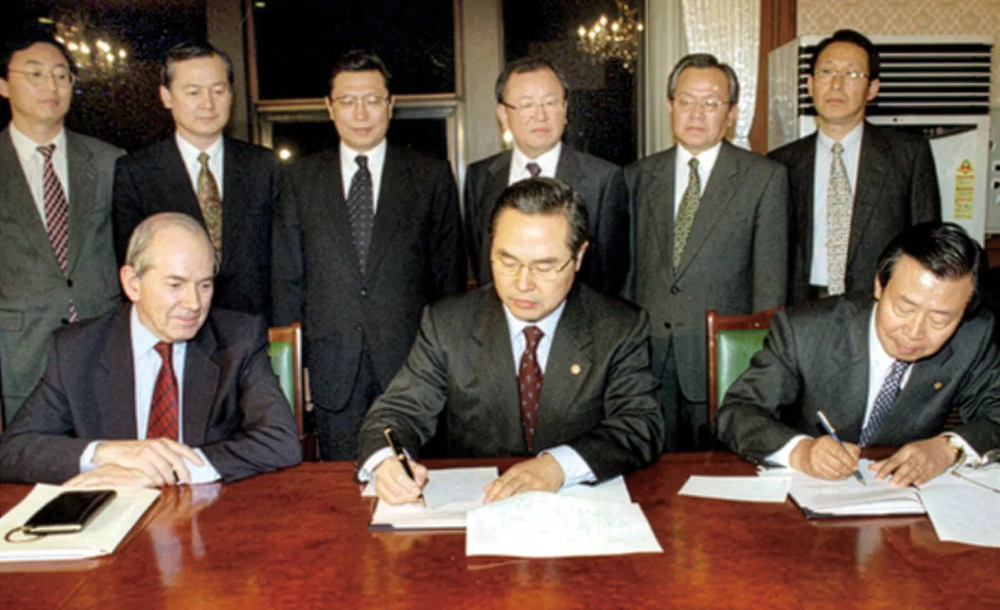
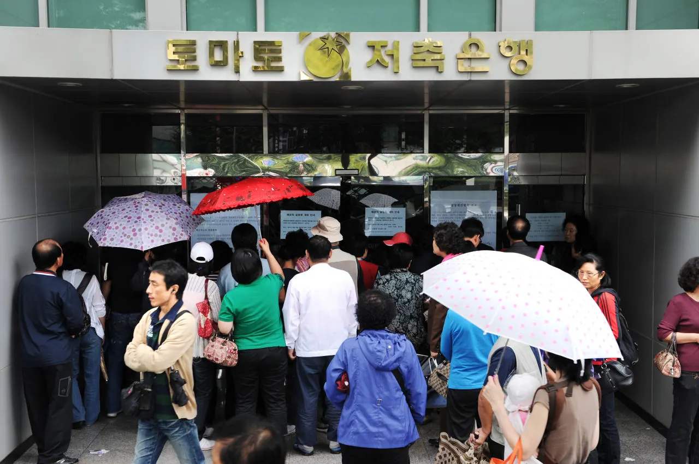
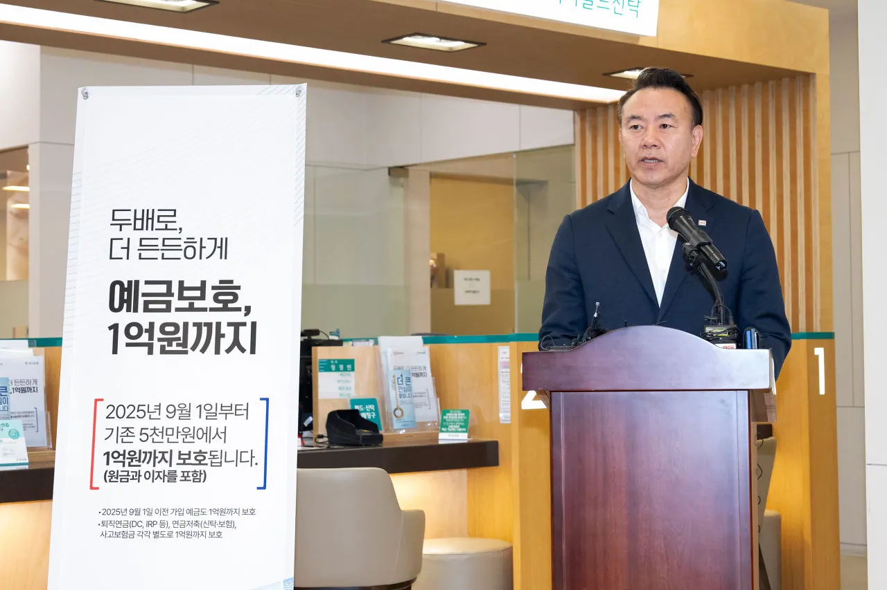

예금보험공사 창립 30주년 역사관
신뢰로 쌓아온 금융안정든든히 지켜낼 국민일상
1996년 6월 1일 문을 연 예금보험공사가 걸어온 30년을 사진과 영상, 숫자로 다시 엮었습니다. 위기가 올 때마다 예금자의 곁을 지켜 온 길입니다.
2026

출범
1996년 6월 1일,예금자 곁에서 첫걸음을 떼다
예금을 지키고 금융제도를 안정시킨다는 사명으로 문을 열었습니다. 직원 44명의 작은 조직이었지만 맡은 일은 무거웠습니다.
1996

외환위기
외환위기 한가운데서,가장 먼저 달려가다
1997년 12월 구제금융을 신청한 뒤, 보험금을 서둘러 지급하고 자금을 지원하고 부실한 금융회사를 정리하며 시장의 불안을 잠재웠습니다.
1998

저축은행
저축은행 사태에도거래는 끊기지 않게
영업정지 이후에도 금융거래가 이어지도록 정리하는 방식을 도입해 예금자가 겪는 불편을 줄이고, 부실 저축은행을 서둘러 정리했습니다.
2011

보호한도 1억
보호한도 1억 원,더 넓어진 안심의 울타리
경제 규모가 커진 만큼 보호의 폭도 넓혔습니다. 착오송금 반환지원처럼 일상에서 체감하는 보호도 이어 갑니다.
2025
신뢰로 쌓아온 30년
예금자를 지키고, 시장의 믿음을 되찾고, 제도를 한 단계씩 고치며 걸어온 30년. 이제 그 경험으로 다음 30년을 준비합니다.
1996년 6월 1일 예금자보호법에 따라 출범한 예금보험공사는 외환위기와 저축은행 사태를 지나며 예금보험제도를 키웠습니다. 이 사이트는 그 흐름을 하이라이트, 인터뷰, 숫자, 자료로 나눠 보여 줍니다.
숫자로 본 30년
직원 44명으로 출발한 조직이 지금은 3,259조 원 규모의 예금을 보호합니다.
부보예금 · 2025년
3,259조 5,788억 원
1996년 623조 7,510억 원
예금보호한도 · 2025년
1억 원
1997년 2,000만 원 → 2001년 5,000만 원
부실정리 금융회사 · 누적
544개
1998년 91개
착오송금 반환 · 누적
16,091건
2021년 1,299건
역사 하이라이트
세 시기, 43장면. 시기를 누르면 가로로 넘겨 보는 사진 필름으로 이어집니다.


기념 인터뷰
6개 파트, 26편. 30년을 곁에서 지켜본 이들의 이야기를 영상으로 봅니다.


아카이브
30년의 사진, 실물, 영상 자료를 한곳에 모았습니다.


다음 쪽
개요